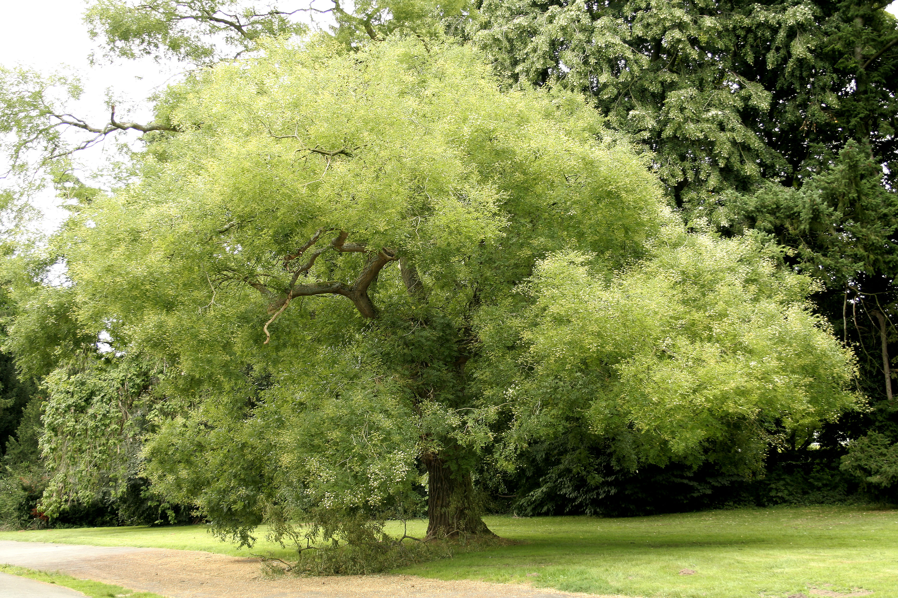

Styphnolobium — Pagoda tree (Styphnolobium)
A poisonous scholar-warrior with centuries of imperial pedigree, patient enough to wait 30 years before flowering — but when it strikes, its hard, flexible wood and cytisine toxins make every blow count.
Combat flavor
Its hard, poison-laced wood makes it a skirmisher that poisons on hit — slow to deploy (long juvenile phase) but its cultural gravitas and cytisine payload give it an outsized threat for its size. Signature ability: a toxic retaliation proc whenever it is struck.
Real-world facts
Typical / max height15–25 m typical; up to ~30 m
Lifespan100+ years commonly; ancient specimens in China (planted since the Shu dynasty, ~1100 BC) suggest potential for several centuries
WoodJanka ~1,600 lbf (7,117 N); specific gravity ~0.636 (~≈ 640–660 kg/m³ air-dry); described as "very hard after drying, tough, light, strong, superior quality"
Growth speedmedium
Ecology / notable traitsAll parts contain cytisine — a nicotinic alkaloid toxic to humans and livestock (pods especially dangerous); native to Chinese dry plains; traditionally planted near Buddhist shrines and imperial government buildings as a memorial tree; does not flower until ~30 years old; nitrogen-fixing family (Fabaceae) though Styphnolobium itself lacks root nodules; pollen source for late-season bees
Where they grow in Amsterdam
Every pin is a real registered tree in the municipal open-data registry. Clusters show how many trees they hold — zoom in and they split apart down to individual trees.
Gallery
